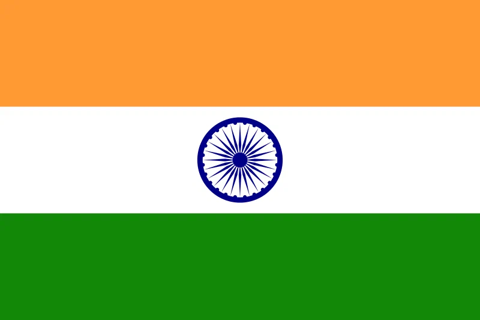
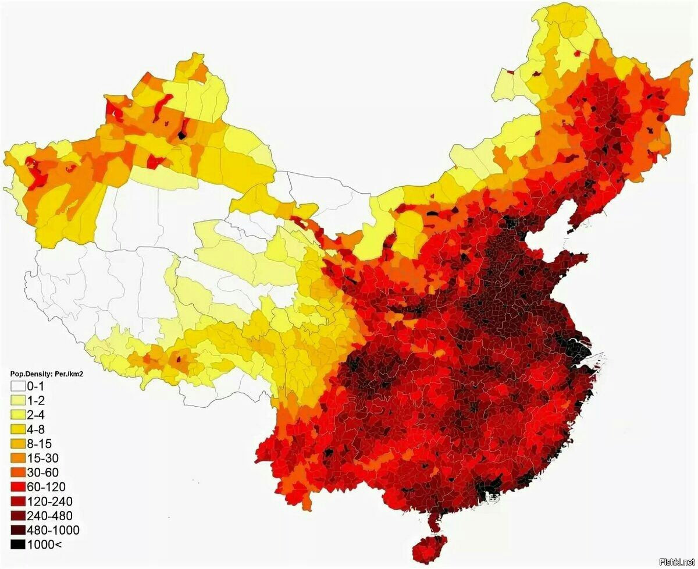
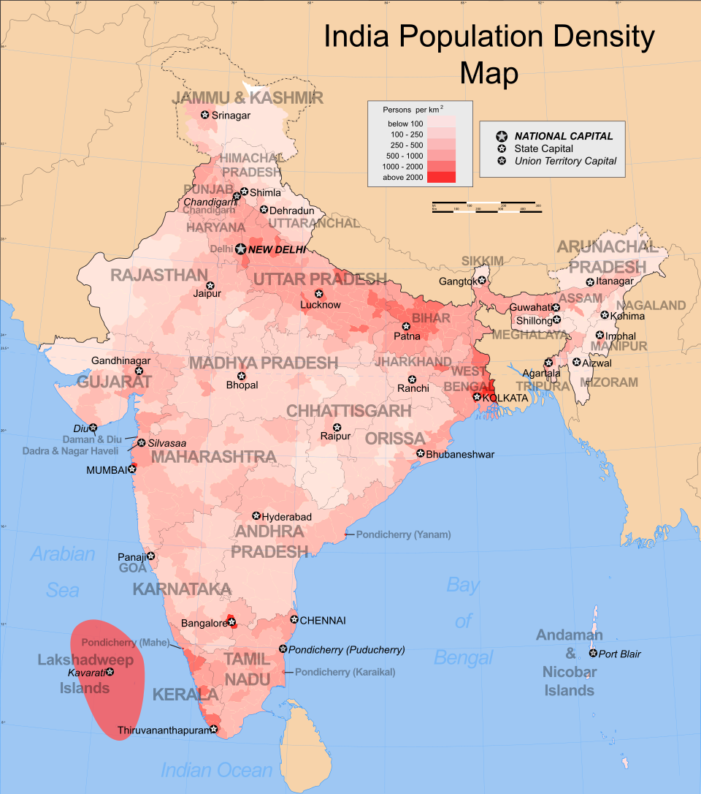

На протяжении многих лет Китай занимает первое место в мире по численности населения. Несмотря на проводимую в прошлом политику «Одна семья — один ребенок», население страны остается огромным. Основную часть населения составляют ханьцы (около 92%), также в стране проживает 55 других официально признанных этнических меньшинств.

Индия — вторая по численности населения страна мира, которая, по прогнозам, может обогнать Китай в ближайшие десятилетия. Для Индии характерен молодой возрастной профиль населения, что представляет собой как потенциал для экономического роста, так и вызов для системы образования и здравоохранения.